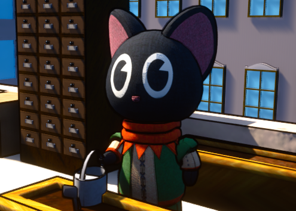
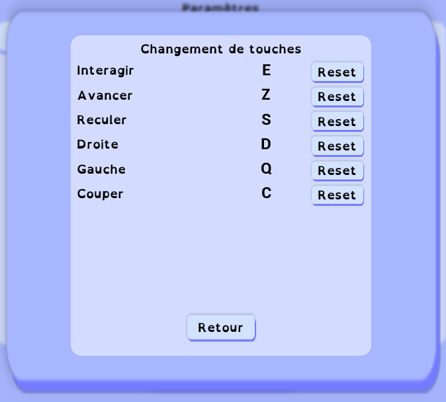
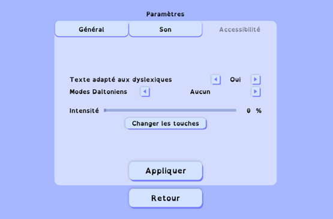

Compétences
- Blueprint
- Modélisation 3D
- Travail d'équipe
- Organisation


11/205 - 3/2026

5 mois

4 personnes

C++, Blueprint
Dans le cadre d’un projet tutoré, nous devions concevoir un jeu vidéo.
Nous avons choisi de développer un jeu de gestion de restaurant nommé Eco Cooking Simulator.
Développé sous Unreal Engine 5, le jeu place le joueur à la tête d’un restaurant écologique où il doit cuisiner, gérer ses stocks, entretenir un potager et une façade végétalisée tout en limitant son impact environnemental.
L’objectif principal est d’accumuler des Crédits Verts en adoptant des pratiques responsables telles que la gestion des déchets, l’économie des ressources et l’utilisation de produits cultivés sur place.
Le projet a été réalisé sur 5 mois par une équipe de 4 étudiants.

Nous devions concevoir l'intégralité du jeu, de la modélisation des environnements jusqu'au développement des mécaniques de gameplay.
Le projet comprenait également la création de l'interface utilisateur, la gestion des sauvegardes, l'optimisation des performances et l'ajout de fonctionnalités d'accessibilité.
Pour ma part, je me suis occupée du développement du système de changement des touches, du mode daltonien, de la création de plusieurs modèles 3D ainsi que du développement de différentes fonctionnalités du jeu.
Je me suis occupée de la modélisation de plusieurs éléments du jeu à l'aide de 3ds Max. Après la création des modèles, j'ai réalisé leur dépliage UV (Unwrap), appliqué les textures puis attribué les différents matériaux avant leur intégration dans Unreal Engine.
J'ai développé une interface permettant au joueur de modifier les touches du clavier selon ses préférences. Pour cela, j'ai récupéré les associations de touches existantes, les ai affichées dynamiquement dans l'interface puis mis en place un système permettant d'enregistrer et d'appliquer les nouvelles configurations choisies par le joueur.
Afin d'améliorer l'accessibilité du jeu, j'ai participé au développement d'un mode daltonien. Celui-ci permet au joueur de choisir différents types de daltonisme ainsi que leur intensité afin d'adapter l'affichage du jeu à ses besoins.
J'ai également participé au développement de plusieurs fonctionnalités de gameplay. Cela incluait l'ajout de fonctionnalités comme : l’apparition d’une commande, le changement de journée, ...
Moteur de jeu utilisé pour développer l'ensemble du projet, gérer les graphismes, les interactions et le gameplay.
Système de programmation visuelle d'Unreal Engine permettant de créer des mécaniques de jeu sans écrire de code.
Logiciel de modélisation 3D utilisé pour créer les objets et éléments visuels du jeu.
Plateforme de gestion de versions permettant de collaborer en équipe et de suivre l'évolution du projet.


Ce projet a été l'une des expériences les plus complètes de ma formation. Il m'a permis de découvrir toutes les étapes de création d'un jeu vidéo, depuis la conception jusqu'à l'optimisation.
J'ai pu approfondir mes compétences en développement, en modélisation 3D et en conception d'interfaces tout en travaillant au sein d'une équipe sur une longue période. Cette expérience a également renforcé mon intérêt pour le développement de jeux vidéo et les problématiques liées à l'écologie.